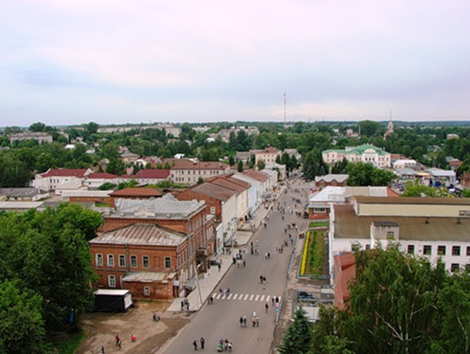

Кашин
Откуда название «Кашин»?
Город назван в честь каши, символа плодородия в новой семье и распространенной русской еды. В альбоме одной из помещичьих усадеб была сделана следующая запись: «Сюда на кашу приезжали, нам говорили в старину. Ее на площадях едали, назвали Кашин потому». Но надо отметить, что до славян в этих местах жили финно-угорские племена, и, если искать происхождение названия в их языке, всплывает слово «кашина» – река, поросшая камышом. Река Кашинка, на которой стоит город, отвечает этому названию. Кашин – город-крепость на заросшей реке.
СимволикаГерб Кашина был утвержден в октябре 1780 года. Вверху герба, на голубом поле изображена митра с золотой лентой. Под ними чаша из золота, из которой бьют серебряные струи фонтана. Внизу расположены три ступки с белилами. Чаша со струями символизирует источники с целебной водой, которые находятся прямо в черте города, а ступки с белилами – Кашинские заводы по производству белил, которые были знамениты на всю Россию.
